Organizing Committee
| Name | Institution | Country | |
|---|---|---|---|
| General Chairs | |||
|
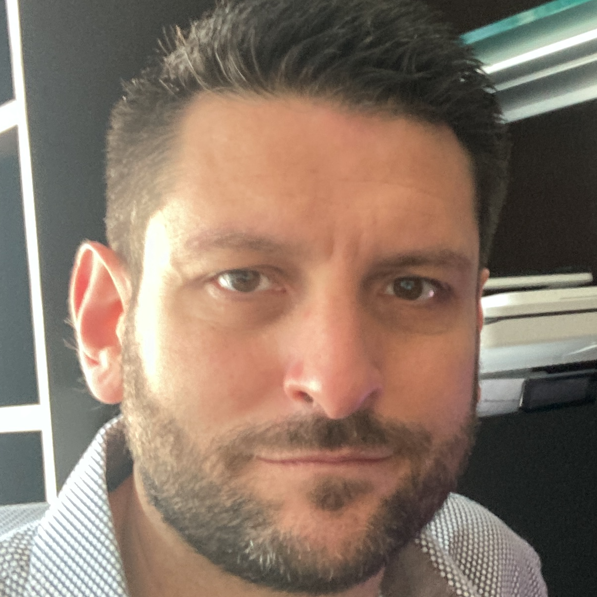
|
Marcello Cinque | Università degli Studi di Napoli Federico II | Italy |
|
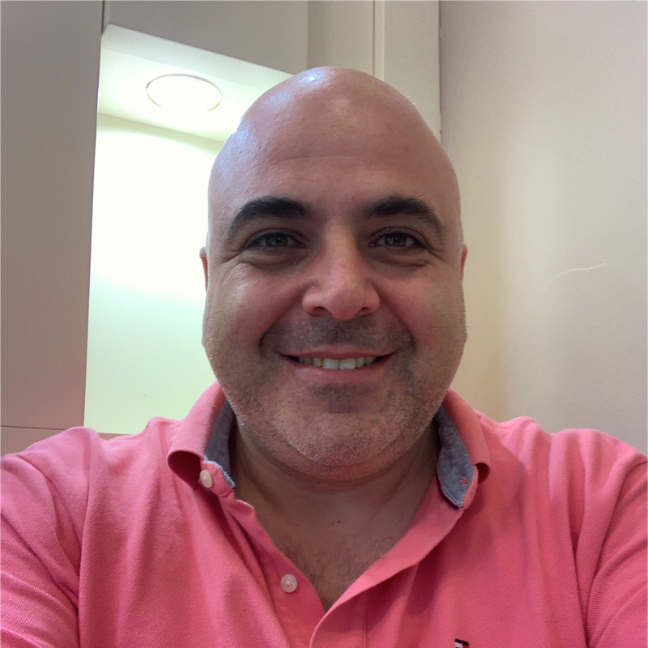
|
Domenico Cotroneo | Università degli Studi di Napoli Federico II | Italy |
| Program Committee Chairs | |||
 |
Patrick Lee | The Chinese University of Hong Kong | Hong Kong |
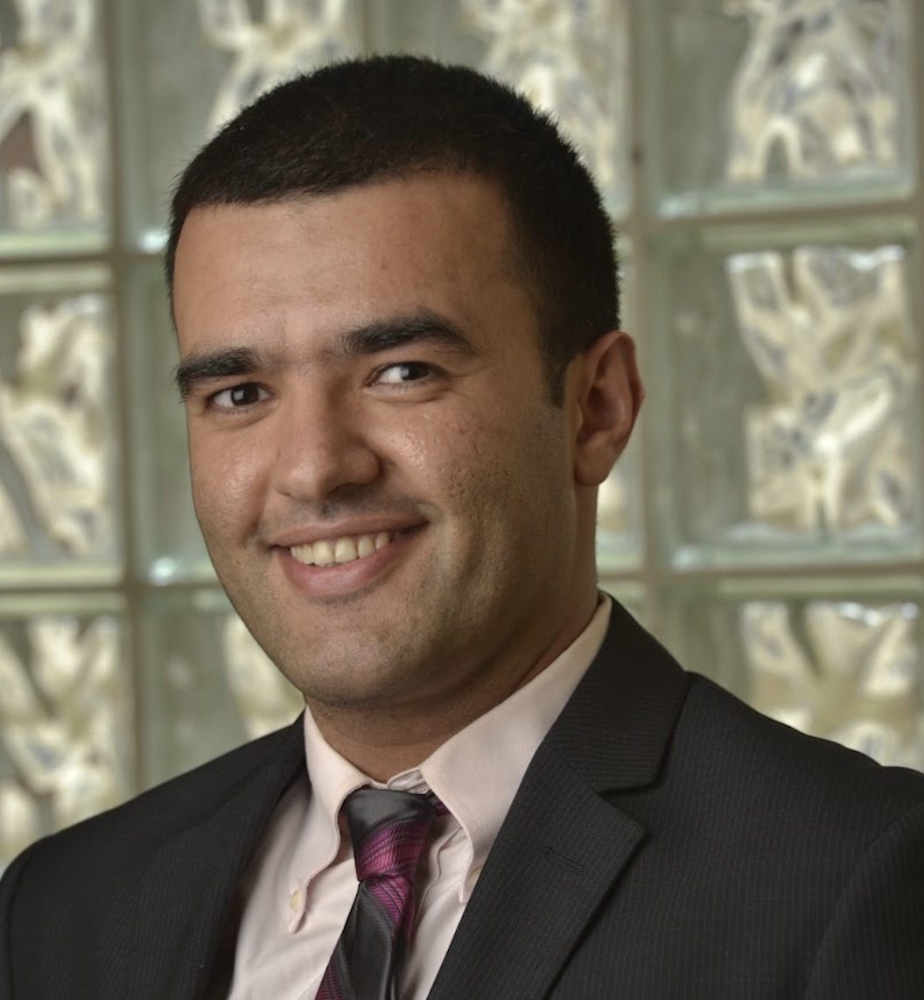 |
Saman Zonouz | Georgia Institute of Technology | USA |
| Program Coordination Chair | |||
 |
TBD | ||
| Industry Track Chairs | |||
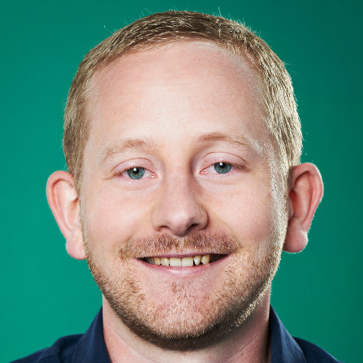 |
Jan Micha Borrmann | Robert Bosch GmbH | Germany |
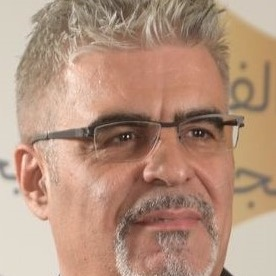 |
George Violettas | SYSGO GmbH | Germany |
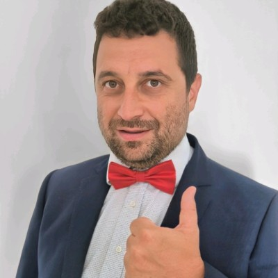 |
Luca Porzio | Micron Technology | Italy |
| Disrupt 2025 | |||
| Andrea Bondavalli | Università degli Studi di Firenze | Italy | |
 |
Marco Vieira | University of North Carolina at Charlotte (UNCC) | USA |
| Artifact Chairs | |||
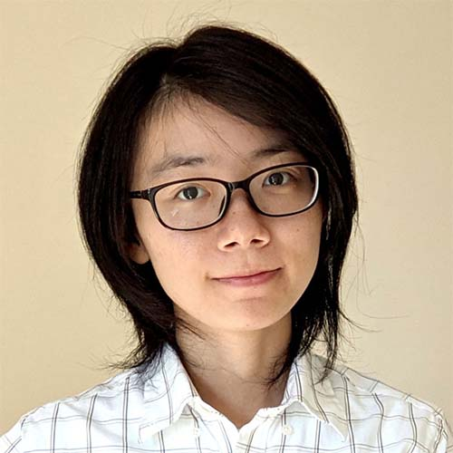 |
Lishan Yang | George Mason University | USA |
 |
Renato Mancuso | Boston University | USA |
| Workshop Chairs | |||
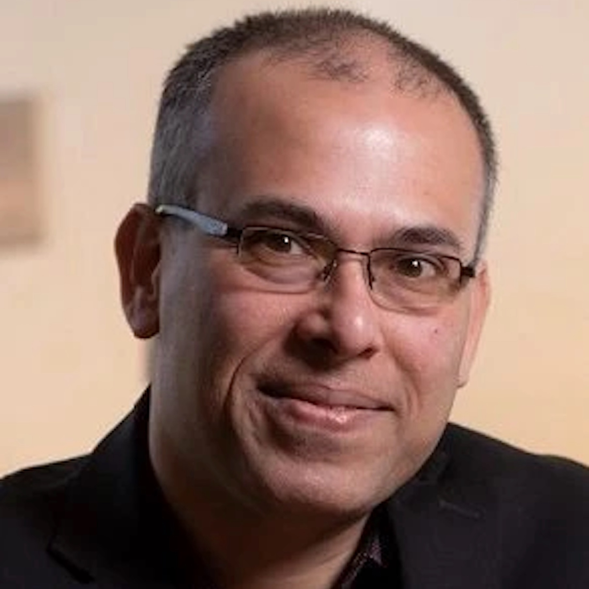 |
Saurabh Bagchi | Purdue University | USA |
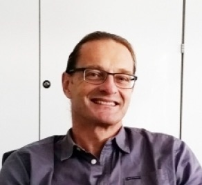 |
Luigi Romano | Università degli Studi di Napoli "Parthenope" | Italy |
| Doctoral Forum Chairs | |||
| Sonia Ben Mokhtar | Centre national de la recherche scientifique (CNRS) | France | |
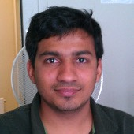 |
Gautam Gala | Technical University of Kaiserslautern-Landau (RPTU) | Germany |
| Posters Track Chairs | |||
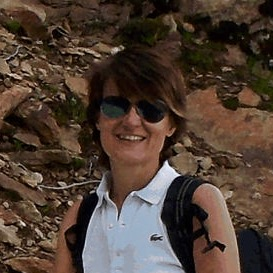 |
Simona Bernardi | Universidad de Zaragoza | Spain |
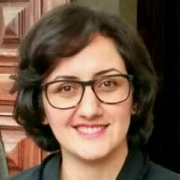 |
Nagmeh Ivaki | University of Coimbra | Portugal |
| Tutorial Chairs | |||
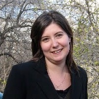 |
Silvia Bonomi | Università degli Studi di Roma "La Sapienza" | Italy |
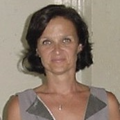 |
Regina Moraes | UNICAMP | Brazil |
| Publication Chairs | |||
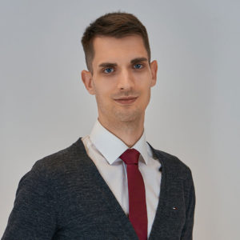 |
Matthias Eckhart | Amazon | Germany |
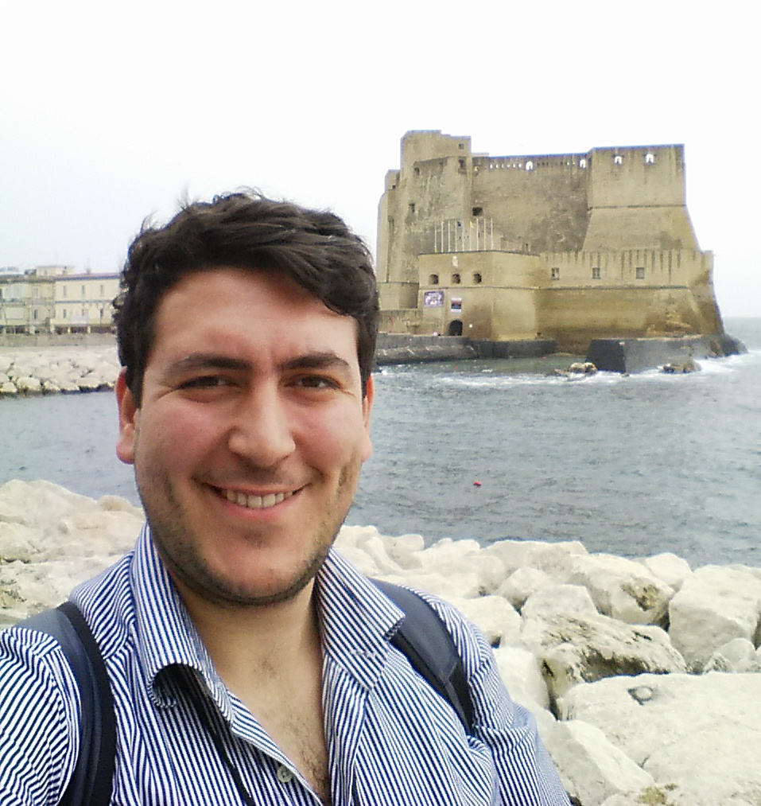
|
Luigi De Simone | Università degli Studi di Napoli Federico II | Italy |
| Publicity Chairs | |||
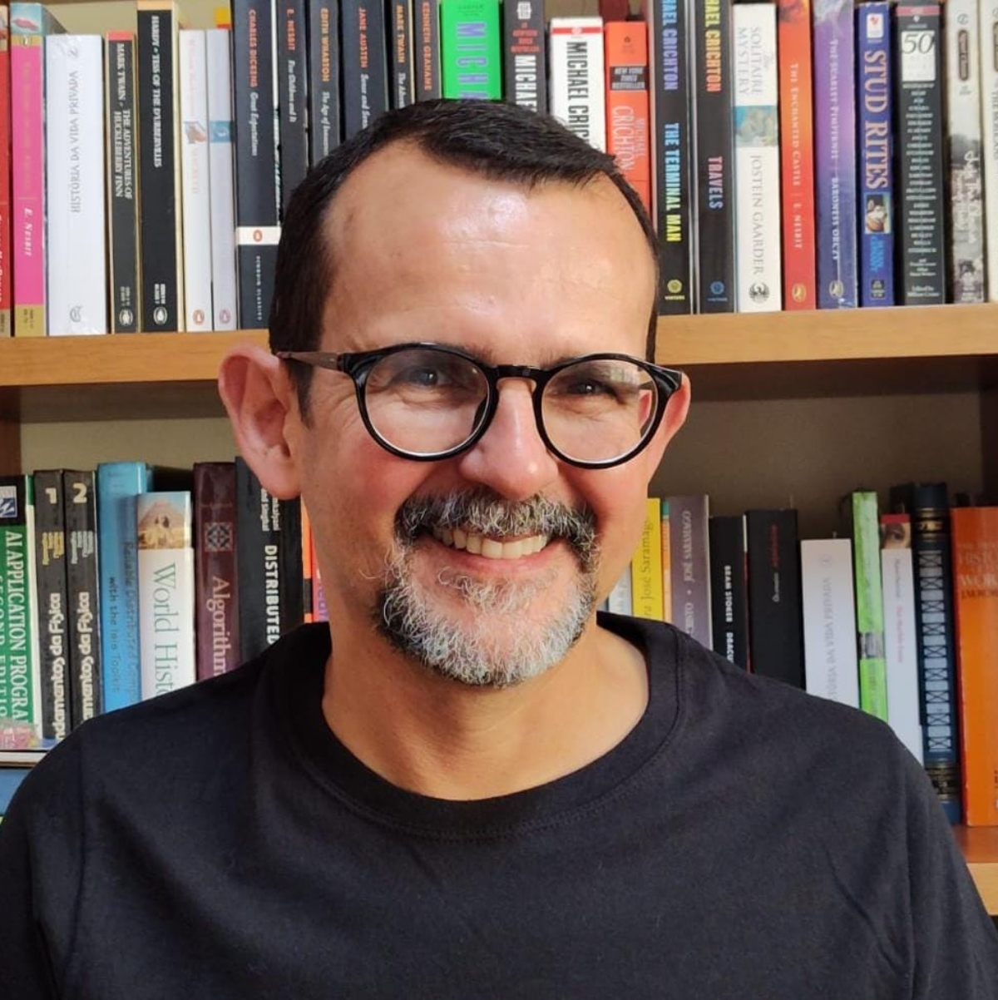 |
Elias Duarte | Federal University of Paraná | Brazil |
 |
Jin Hong | The University of Western Australia | Australia |
 |
João Rodrigues Campos | University of Coimbra | Portugal |
| Sponsorship Chairs | |||
| Saurabh Jha | IBM Research | New York, USA | |
| Local Arrangement Chair | |||
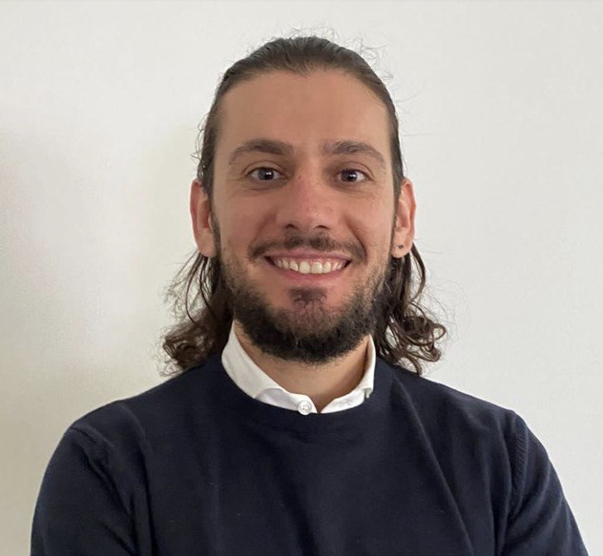 |
Pietro Liguori | Università degli Studi di Napoli Federico II | Italy |
| Finance & Registration Chair | |||
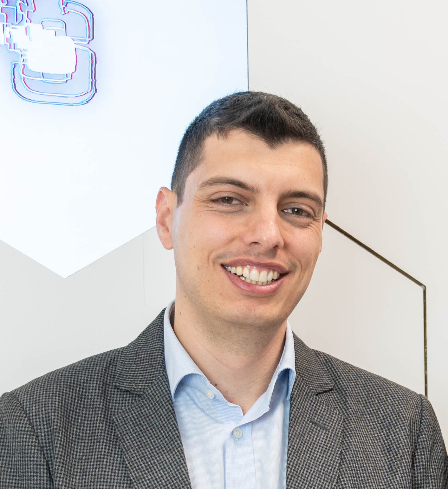 |
Raffaele Della Corte | Università degli Studi di Napoli Federico II | Italy |
| Webmaster Chair | |||
| Luigi De Simone | Università degli Studi di Napoli Federico II | Italy |
Powered by w3.css